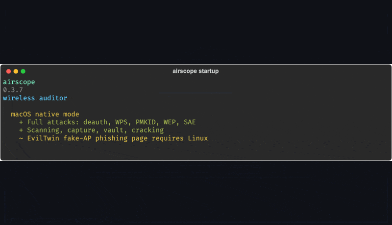
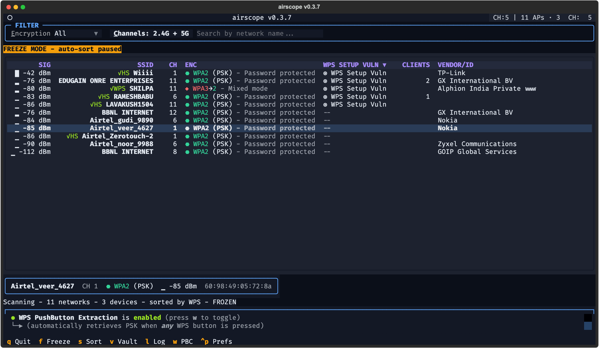
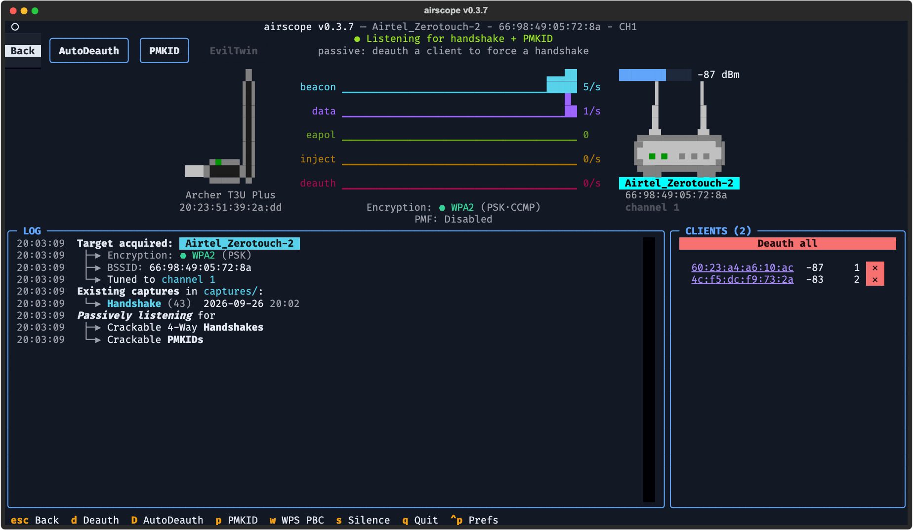

A pure-Python 802.11 auditing tool that talks to your Wi-Fi adapter straight from userspace: scanning, handshake capture, deauth, WPS, PMKID, WEP and a 3-step EvilTwin — one codebase on Linux, Windows (WSL2) and macOS.

Live scanner with freeze mode (F), channel hopping, client tracking,
handshake + PMKID capture, vendor/OUI intel.
AutoDeauth, WPS PIN + PBC, PMKID harvest, WEP replay, WPA3-SAE — running natively on macOS too, verified over-the-air.
Real handshake first, then a WPA2 twin with live deauth, then online MIC-recovery of the PSK. The captive-portal variant needs a Linux host interface — the one platform exception, labelled clearly in the UI.
Captures land in a vault per-network; crack with hashcat or aircrack-ng with live progress, exports to pcap/hc22000/CSV/HTML.
A 60fps Textual TUI and an optional web dashboard
(--web), both driven by the same engine.
Userspace USB via PyUSB — no kernel drivers, no aircrack-ng, no hostapd. The 802.11 stack, DHCP and captive portal are Python in this repo.


| macOS (universal2) | airscope-macos-universal2 · full attacks native; EvilTwin portal is the Linux-only exception |
| Linux x64 / arm64 | airscope-linux-x64 · airscope-linux-arm64 · everything |
| Windows x64 | airscope-windows-x64.exe · auto-runs inside WSL2 with usbipd |
| From source | git clone … && uv sync --group dev && uv run airscope |
| Supported adapters | 20 chipsets / 25 drivers graded — see SUPPORTED-HARDWARE.md |
| Tests | 3,008 passing, hardware fully mocked |